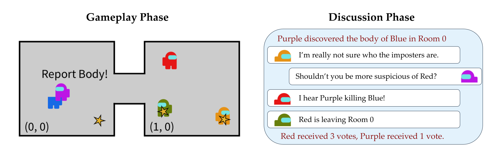
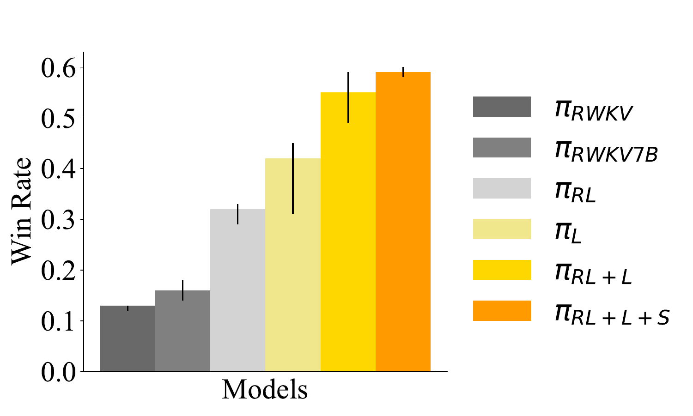

Training Language Models for Social Deduction with Multi-Agent Reinforcement Learning
- Bidipta Sarkar
- Warren Xia
- C. Karen Liu
- Dorsa Sadigh
Abstract
Communicating in natural language is a powerful tool in multi-agent settings, as it enables independent agents to share information in partially observable settings and allows zero-shot coordination with humans. However, most prior works are limited as they either rely on training with large amounts of human demonstrations or lack the ability to generate natural and useful communication strategies. In this work, we train language models to have productive discussions about their environment in natural language without any human demonstrations. We decompose the communication problem into listening and speaking. Our key idea is to leverage the agent's goal to predict useful information about the world as a dense reward signal that guides the communication. Specifically, we improve a model's listening skills by training them to predict information about the environment based on discussions, and we simultaneously improve a model's speaking skills with multi-agent reinforcement learning by rewarding messages based on their influence on other agents. To investigate the role and necessity of communication in complex social settings, we study an embodied social deduction game based on Among Us, where the key question to answer is the identity of an adversarial imposter. We analyze emergent behaviors due to our technique, such as accusing suspects and providing evidence, and find that it enables strong discussions, doubling the win rates compared to standard RL.
Among Us Environment

To investigate a challenging and grounded social deduction game, we implement a token-based hidden role game based on Among Us. Our game features two phases: an embodied gameplay phase and a free-form discussion phase. During the gameplay phase, agents navigate a 2D grid environment, with crewmates completing tasks and imposters killing crewmates. The discussion phase begins when a player reports the corpse of a player killed by the imposter. During the discussion phase, each player generates free-form messages and votes for a player to remove from the game.
Our Technique
We train crewmates to improve their discussion abilities. To do so, we decompose discussions into two components: listening and speaking.
Listening
We want crewmates to be able to accurately predict the identity of the imposter given prior messages and interactions with the environment. Therefore, we minimize the following loss to improve listening:
where \(\pi(a_{\text{vote},j} | \tau^i_t)\) is the probability that agent \(i\) correctly votes for the imposter (player \(j\)) after \(t\) timesteps of interaction. We optimize this loss over all belief-querying timesteps, which occurs between each message during the discussion phase.
Speaking
We want crewmates to influence each other to correctly vote against the imposter. Specifically, let \(B_t\) be the sum of all living crewmates' beliefs in the correct imposter at time \(t\):
Then, we reward the currently speaking crewmate \(r^s_t\):
where \(t'\) was the previous belief-querying timestep. This reward incentivizes messages that make other crewmates more confident regarding the identity of the imposter.
Results

Relative to our baselines of pure RL (\(\pi_{RL}\)) and just listening (\(\pi_{L}\)), we find that incorporating listening (\(\pi_{RL+L}\)) and speaking (\(\pi_{RL+L+S}\)) significantly improves the win rate of crewmates.
Below, we share example generations from our \(\pi_{RL+L+S}\). All samples are from the perspective of the imposter.
Sample 1
Through the discussion, Player Pink learns that Player Blue is the imposter.
World (to all): Player Yellow discovered the dead body of Player Purple in room (0,0).
Player Blue (you) saying: "There's no way I'm playing this game."
Player Yellow (to all): "Only the Imposter will speak."
Player Green (to all): "The other Crewmates are suspicious of Player Blue. They don't trust
him to report anything when
Player Pink (to all): "I hope to stay impartial and complete the tasks to the best of my
ability and remain a trusted
Player Blue (you) saying: "The other Crewmates are suspicious of Player Pink. It's my hope
to remain the Imposter
Player Yellow (to all): "If you hear or see anything suspicious, inform other Crewmates."
Player Green (to all): "I notice suspicious activities of Player Blue and Player Purple."
Player Pink (to all): "I notice suspicious activities of Player Blue."
Player Blue was voted out. Crewmates win!
Sample 2
Other players directly accuse Player Green.
World (to all): Player Purple discovered the dead body of Player Yellow in room (2,0). Player Orange (to all): "The Imposter is Player Green." Player Green (you) saying: "Shut Up!" Player Purple (to all): "The Imposter is Player Green." Player Orange (to all): "You are the Imposter!" Player Green (you) saying: "My strategy is to kill or eject Imposters." Player Purple (to all): "Players can only report each other and identify the Imposter." Player Green was voted out. Crewmates win!
Sample 3
Player Pink, the imposter, convinces the other crewmate to vote out the innocent Player Orange.
World (to all): Player Purple discovered the dead body of Player Red in room (1,0).
Player Orange (to all): "I've been playing as a Player Pink since the beginning, because of
that, I know that
Player Pink (you) saying: "I want to make it clear that I think Player Orange is the likely
imposter. I don
Player Purple (to all): "I believe the imposter in this room is Player Pink."
Player Orange (to all): "I believe that Player Purple is the imposter in this
Player Pink (you) saying: "I believe the imposter is Player Cubie."
Player Purple (to all): "I believe Player Pink killed Player Orange."
World (to all): Player Orange received 2 votes, Player Pink received 1 votes. Therefore,
Player Orange is ejected this round.
World (to all): There are currently more imposters than crewmates. Imposters win!
Citation
The website template was borrowed from Jon Barron